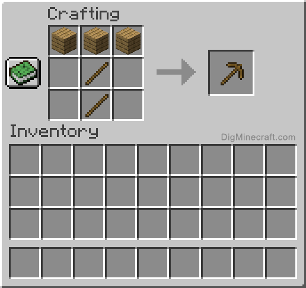
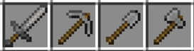

Крок 1: Спавн початок всього дерево! Добудь 20 блоків дерева та зробіть верстак його 2 раз робити не треба ти його поставив та використовуеш завжди коли треба
Крок 2: Крафтим деревьяне кайло це перший інструмент який ми будемо використовувати завжди!
Крок 3: Спускаемось чуть нижче добуваемо десь 15 каменю та вилазим у шахту нам ще рано.

Крок 4: На поверхні за допомогою верстака робить кам'яний меч щоб всі моби нас боялися! Топор щоб було чим добувати дерево, кам'яне кайло за допомогою нього ми добудемо багато ресурсів. Та лопату щоб було зручніше у шахті.
